| 판단 대상 | 완성할 결과 |
|---|---|
| 관측값과 질문 | 시간 변화와 변수 관계의 구분 |
| 그림 구성과 표현 | 선·점·라벨·범례가 읽히는 그림 |
| 저장과 검증 | 입력값을 보존한 공유용 PNG 두 장 |
Outline
데이터시각화 — Matplotlib 기본 시각화
같은 관측값으로 그림을 만들고, 그림이 허용하는 해석을 판정한다.
방문 현황 보고의 입력과 질문
가상 체험 부스 담당자에게 방문 추이와 기온별 방문 현황을 전달한다. 한 행은 하루의 관측이다.
| day: 일차 | temp: 기온(°C) | a: A 방문자(명) | b: B 방문자(명) | wait: A 대기(분) |
|---|---|---|---|---|
| 1 | 18 | 20 | 18 | 2 |
| 2 | 22 | 40 | 32 | 8 |
| 3 | 20 | 30 | 35 | 4 |
| 4 | 24 | 50 | 45 | 6 |
시간 질문: A 방문자는 어느 날 줄었는가? → 2일차 40명에서 3일차 30명으로 감소.
관계 질문: 기온이 높은 날 방문자가 많은가? → 이 네 관측에서는 함께 증가한다.
입력은 수업용 가상 자료다. 최종 전달물은 추이 그림과 관계 그림이다.
데이터와 그리기 도구의 준비
Matplotlib은 값을 선과 점으로 표현하는 Python 라이브러리다. 값을 자동으로 해석하거나 인과관계를 판정하지 않는다.
import matplotlib.pyplot as plt
day = [1, 2, 3, 4]
temp = [18, 22, 20, 24]
a = [20, 40, 30, 50]
b = [18, 32, 35, 45]
wait = [2, 8, 4, 6]main.py의 입력 단계다. plt는 pyplot의 짧은 이름이다.
예제마다 아래 코드로 새 그림을 만든다. 별도 생성 줄이 있으면 그 줄을 쓴다.
plt.rcParams["font.size"] = 18
plt.rcParams["figure.autolayout"] = True
fig, ax = plt.subplots(figsize=(8, 5))rcParams는 기본 모양 설정이다. 글자 18pt와 라벨용 자동 여백을 설정한다. 스타일 예제는 classic을 쓴다.
같은 위치가 같은 날이다. 둘째 날은 22°C, A 40명, B 32명, 대기 8분이다.
그림을 바꿔도 관측값의 짝은 유지한다.
Figure·Axes·Axis의 역할
Figure는 저장할 그림 전체, Axes는 데이터를 그리는 한 영역, Axis는 그 영역의 가로축 또는 세로축이다.
fig, ax = plt.subplots(figsize=(8, 5), dpi=100)fig는 그림 전체(Figure), ax는 그리기 영역(Axes)이다. Axis는 가로축 또는 세로축이다.
figsize=(가로, 세로)의 단위는 인치다. dpi는 인치당 픽셀 수다. 아래 세 설정의 픽셀 크기를 비교한다.
| figsize / dpi | 픽셀 크기 |
|---|---|
| (8, 5) / 100 | 800 × 500 |
| (4, 5) / 100 | 400 × 500 |
| (8, 5) / 200 | 1600 × 1000 |
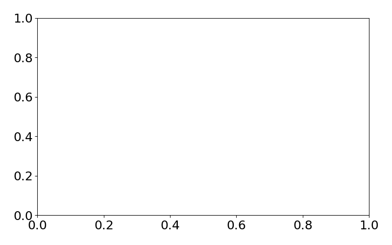
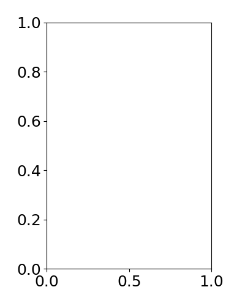
같은 축 범위 0~1, 같은 배율로 표시했다. 가로만 줄이면 그림이 좁아진다. DPI만 두 배로 하면 종횡비는 같고 픽셀 수는 가로·세로 각각 두 배다.
픽셀 크기 = 인치 × DPI. figsize는 크기·종횡비를, DPI는 픽셀 밀도를 정한다. (자르기 없는 PNG 기준)
zip의 짝짓기와 별표를 이용한 열 복원
여기서 a는 날짜, b는 방문자 수를 담은 문법 설명용 변수다. zip 자체는 값을 정렬하지 않는다.
zip(a, b): 같은 위치끼리 묶기
a = [3, 1, 4, 2]
b = [30, 20, 50, 40]
c = list(zip(a, b))입력: 날짜 열과 방문자 수 열
출력: 날짜·값을 묶은 행 4개
c
# [(3, 30), (1, 20), (4, 50), (2, 40)]zip은 짝을 차례로 꺼내는 객체를 만든다. list로 그 짝을 모두 담아 확인한다.
zip(*c): 묶인 행을 열로 나누기
dates, visitors = zip(*c)*c는 c의 네 행을 별도 인자로 펼친다. 아래 호출과 같다.
zip((3, 30), (1, 20),
(4, 50), (2, 40))각 행의 첫 값끼리, 둘째 값끼리 묶는다.
dates # (3, 1, 4, 2)
visitors # (30, 20, 50, 40)같은 길이의 두 열 → 날짜·값의 행 → 원래 두 열. 길이가 다르면 기본 zip은 짧은 쪽이 끝날 때 멈춘다.
관측값의 짝을 보존하는 정렬
plot은 입력 순서대로 선을 잇고 자동 정렬하지 않는다. 날짜·값의 짝을 보존하며 정렬한 뒤 그린다.
fig, ax = plt.subplots(figsize=(8, 2.5))
day_raw = [3, 1, 4, 2]
a_raw = [30, 20, 50, 40]
ax.plot(day_raw, a_raw)위: 입력 순서 3→1→4→2로 연결한다.
pairs = sorted(zip(day_raw, a_raw))
day, a = zip(*pairs)
fig, ax = plt.subplots(figsize=(8, 2.5))
ax.plot(day, a)zip은 날짜·값을 짝짓고, sorted는 날짜순으로 짝을 옮긴다. zip(*pairs)는 두 열로 다시 나눈다.
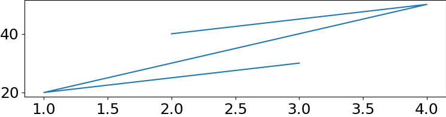
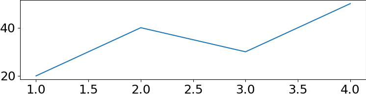
day만 정렬하면 (1,30)으로 짝이 깨진다. 정렬 후에도 관측 4개와 날짜별 값은 같고 연결 순서만 달라진다.
관측점과 연결선의 의미
원은 관측된 값이고, 원 사이 선분은 두 관측을 연결한 표현이다. 선 위의 모든 위치를 측정한 것은 아니다.
ax.plot(day, a,
marker="o", linestyle="-")linestyle="-"는 실선이다. marker="o"는 원형 관측점이다.
2일차는 40명, 3일차는 30명이다. 선분의 중간 높이 35는 두 점의 직선 연결값일 뿐, 2.5일차 측정값이 아니다.
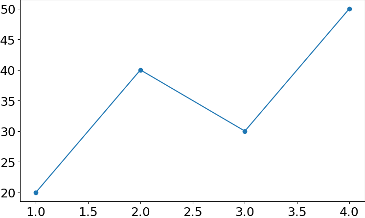
선을 부드럽게 잇는 것과 더 많이 관측하는 것은 다르다.
축 라벨과 제목의 역할
숫자만으로는 일차·기온·방문자 수를 구별할 수 없다. 라벨은 변수와 단위를 명시한다.
ax.plot(day, a, marker="o")
ax.set_xlabel("Day")
ax.set_ylabel("Visitors (people)")
ax.set_title("Booth A visitors")set_xlabel은 가로축 이름, set_ylabel은 세로축 이름, set_title은 그림 제목을 정한다.
실행 결과: 가로축은 Day(일차), 세로축은 Visitors (people)(방문자 수·명), 제목은 Booth A visitors가 된다. 좌표 (2,40)는 그대로다.
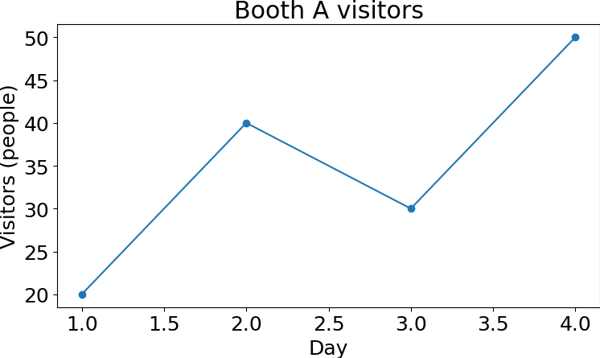
제목은 대상, 축 라벨은 변수와 단위를 전달한다.
두 선의 식별과 범례 생성
범례는 시각적 모양과 데이터 이름을 연결한 표다. A·B는 같은 날의 서로 다른 부스다.
ax.plot(day, a, marker="o",
color="#1B365D", label="Booth A")
ax.plot(day, b, marker="s",
color="0.4", linestyle="--",
label="Booth B")
ax.legend()label은 이름 등록, legend()는 범례 표시다. A는 남색 실선·원, B는 회색 점선·사각형이다. 0.4는 검정 0~흰색 1 사이의 회색이다.
부스 예제의 출력: 두 범례는 Booth A·Booth B다. 3일차에서만 B 35명이 A 30명보다 많다.
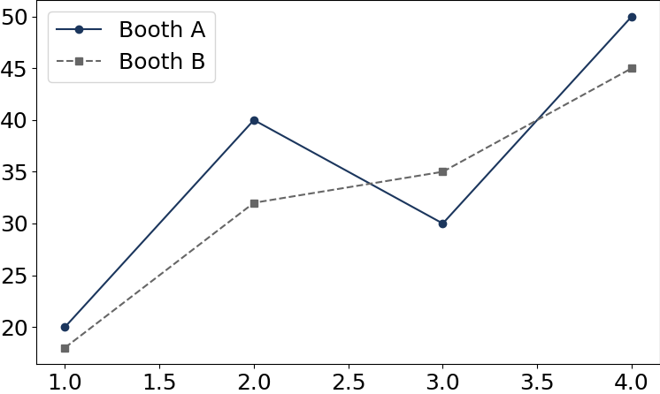
기본 색 순환만으로도 두 선은 그려진다. 이름과 모양을 함께 지정하면 색 없이도 식별할 수 있다.
스타일의 기본값과 선별 옵션의 우선순위
classic은 선·색 순환·배경·눈금·글꼴의 기본값 묶음이다. plot에서 따로 지정한 항목은 그 선에만 우선 적용된다.
plt.style.use("classic")
fig, ax = plt.subplots(figsize=(8, 2.5))
ax.plot(day, a)위 결과: 첫 선은 파란색·실선·마커 없음, 선 두께는 1pt, 눈금은 안쪽이다. classic이 정한 기본값을 사용한다.
fig, ax = plt.subplots(figsize=(8, 2.5))
ax.plot(day, a, "--o", color="black")아래 결과: --는 점선, o는 원, color는 검정으로 이 선만 바꾼다. 두께·눈금 등 미지정 항목은 classic을 따른다.
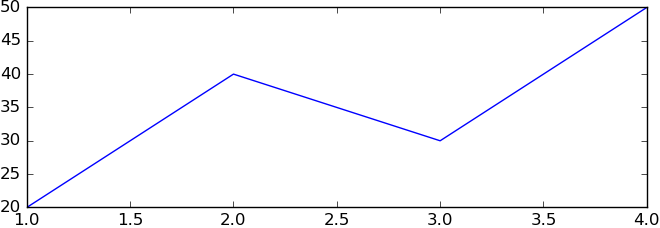
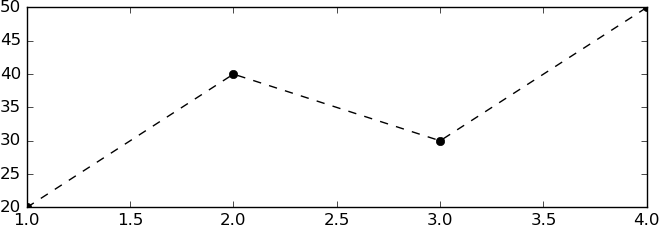
스타일은 그림들의 공통 기준, --o는 특정 선의 구별·관측점 표시다. 기본 모양으로 충분하면 개별 옵션을 생략한다.
같은 값과 다른 세로축 범위
축 범위는 보여 주는 구간이다. 같은 좌표라도 세로축 전체 폭이 달라지면 변화가 차지하는 화면 비율이 달라진다.
ax.plot(day, a, marker="o") # 두 그림에 같은 입력 적용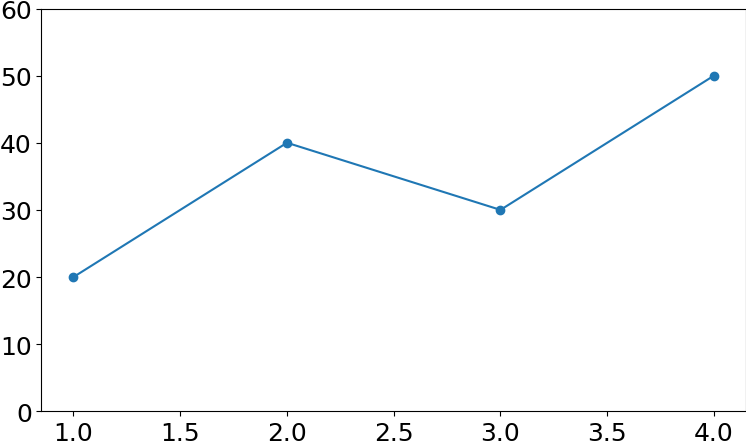
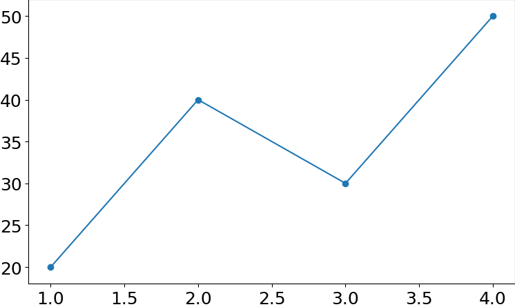
set_ylim(아래, 위)는 값 자체를 바꾸지 않는다. 그림 크기와 데이터가 같아도 축 범위가 다르면 기울기 인상이 달라진다.
축 범위 밖 관측의 누락
수동 범위는 자동 범위를 대체한다. 왼쪽은 관측을 가리는 범위, 오른쪽은 관측 전체를 포함하는 범위다.
ax.plot(day, a, marker="o") # 두 그림에 같은 입력 적용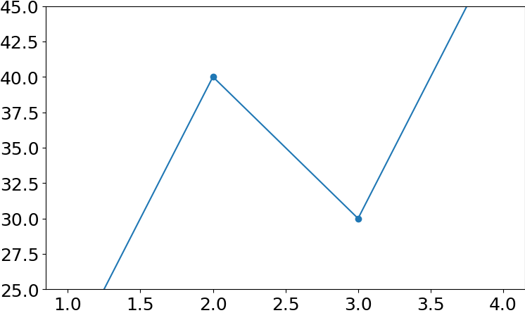
set_xlim(왼쪽, 오른쪽)·set_ylim(아래, 위)는 표시 범위다. 부스 자료는 y=20~50을 포함해야 하므로 0~60처럼 정한다.
0 시작은 모든 선 그래프의 필수 규칙이 아니다. 비교 목적과 관측 포함 여부가 판단 기준이다.
기온과 방문자 수의 관계
이제 시간 추이에서 변수 관계로 질문을 바꾼다. 산점도는 각 관측의 두 값을 연결선 없이 한 점으로 나타낸다.
fig, ax = plt.subplots(figsize=(8, 5))
ax.scatter(temp, a)
ax.set_xlabel("Temperature (C)")
ax.set_ylabel("Visitors (people)")scatter(x, y)는 같은 위치의 값을 점 하나로 묶는다. 둘째 날은 (22,40)이다.
가로는 기온 °C, 세로는 A 방문자 수다. 네 관측에서 기온이 높을수록 방문자도 많다.
시간 변화에는 순서 있는 선을, 두 변수의 관계에는 점을 쓴다. plot(temp, a)는 18→22→20→24°C 순서의 경로까지 추가한다.
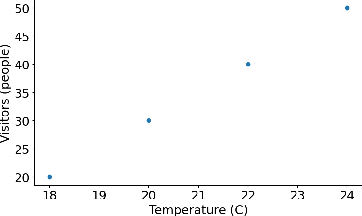
함께 증가한 관측만으로 기온이 방문자를 증가시켰다고 단정할 수 없다.
점 크기로 대기시간 표시
위치는 기온과 방문자 수, 크기는 같은 날의 대기시간을 나타낸다. 이 대응 규칙을 그림 옆에 명시한다.
sizes = [80, 320, 160, 240]
ax.scatter(temp, a, s=sizes,
color="#1B365D", linewidths=0)s는 점마다 줄 수 있는 크기 값이며 단위는 pt²이다. 1pt는 1/72인치다. 여기서는 대기 1분당 40pt²를 배정한다.
linewidths=0은 테두리 두께를 없애 크기 비교에 테두리가 끼어들지 않게 한다. 네 크기의 순서도 원래 행과 같아야 한다.
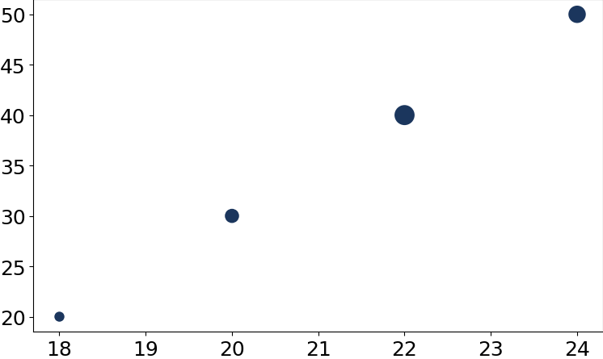
s=80→320은 크기 척도 4배다. 같은 원형 마커의 가로 길이는 2배가 된다.
겹친 점과 투명도의 한계
겹침 확인을 위한 별도 작은 반례다. (22,40)이 세 번, 나머지 두 좌표가 한 번씩 있는 총 5행을 그린다.
x = [18, 22, 22, 22, 24]
y = [20, 40, 40, 40, 50]
ax.scatter(x, y, alpha=1) # 오른쪽은 alpha=0.3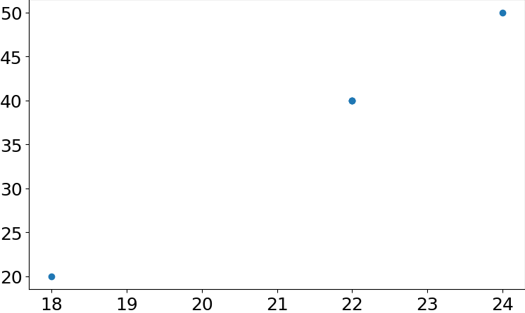
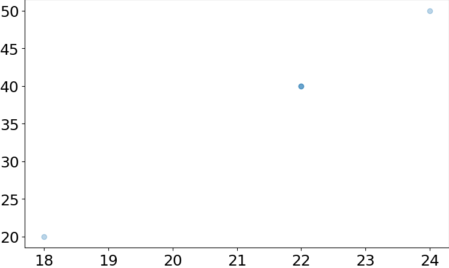
alpha는 불투명도다(0: 투명, 1: 불투명). 진한 부분은 겹침 단서이며 정확한 개수는 원본 5행으로 확인한다.
동일한 점 표현과 함수 선택
점만 그리는 방법은 두 가지다. 같은 모양·크기면 plot도 가능하고, 점마다 크기를 달리하려면 scatter를 쓴다.
# 두 그림은 각각 새 Figure·Axes에서 실행한다.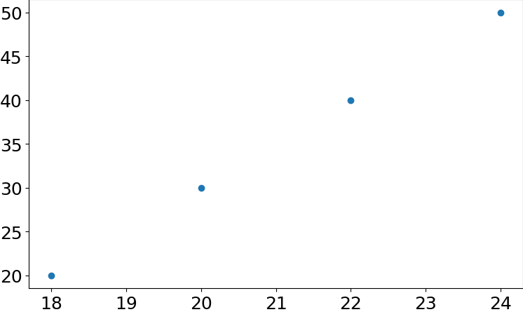

plot의 markersize는 공통 크기(pt), scatter의 s는 크기 값(pt²) 배열을 받을 수 있다. 이름과 단위가 다르므로 숫자를 그대로 옮기지 않는다.
선 그리기의 대상: plt.plot과 ax.plot
영역(Axes)은 선을 그리는 그래프 칸이다. 두 방식은 어느 칸에 그릴지 정하는 방법이 다르다.
plt.plot: 지금 선택된 칸에 그리기
import matplotlib.pyplot as plt
fig, ax = plt.subplots()
plt.plot([1, 2], [20, 40])subplots()로 그림 전체(fig)와 그래프 칸(ax)을 만든다. 이 칸이 현재 선택된다. plt.plot은 그때의 현재 칸을 찾아 그린다.
ax.plot: ax가 가리키는 칸에 그리기
import matplotlib.pyplot as plt
fig, ax = plt.subplots()
ax.plot([1, 2], [20, 40])같은 준비를 하되, 그릴 칸을 ax로 직접 지정한다. 이것이 ‘명시적 지정’이다.ax.plot은 ax가 가리키는 칸에 그린다.
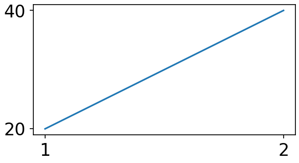
각 예제를 따로 실행하면 결과는 같다.
첫 목록은 x값, 둘째 목록은 y값이다.
(1, 20)과 (2, 40)을 선 하나로 잇는다.
이후 다른 그래프 칸을 새로 만들면? plt.plot은 새 현재 칸에 그린다.
기존 ax 변수를 유지한 ax.plot은 처음 칸에 그린다.
기존 ax 변수를 유지한 ax.plot은 처음 칸에 그린다.
그림 저장과 해상도 계산
저장은 메모리의 Figure를 전달 가능한 파일로 바꾸는 단계다. 저장된 파일을 다시 열어야 전달 결과를 확인할 수 있다.
ax.plot(day, a, marker="o")
ax.set_xlabel("Day")
ax.set_ylabel("Visitors (people)")
ax.set_title("Booth A visitors")
fig.savefig("visitors.png", dpi=150)fig의 전체 그림을 현재 작업 폴더의 visitors.png에 쓴다. 같은 이름이 있으면 덮어쓴다. 확장자 .png가 형식을 정한다.
기존 figsize=(8,5)에 150dpi를 적용하면 가로 8×150=1200픽셀, 세로 5×150=750픽셀이다. dpi는 인치당 픽셀 수다.
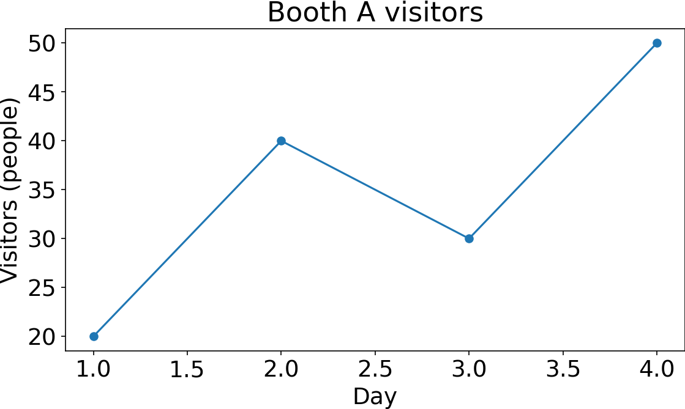
이 계산은 자르기 옵션 없이 저장한 경우다. 해상도를 높여도 관측점 네 개가 늘어나지는 않는다.
고정 크기와 여백 자르기의 선택
기본 savefig는 Figure 크기를 보존한다. bbox_inches="tight"는 내용 둘레로 저장 범위를 다시 계산한다.
ax.plot(day, a, marker="o")
ax.set_xlabel("Day")
ax.set_ylabel("Visitors (people)")
ax.set_title("Booth A visitors")
fig.savefig("fixed.png", dpi=150)
fig.savefig("trimmed.png", dpi=150,
bbox_inches="tight")고정 크기 문서에는 기본 저장, 여백을 줄이려면 tight를 선택한다. 저장 파일의 크기와 라벨을 확인한다.
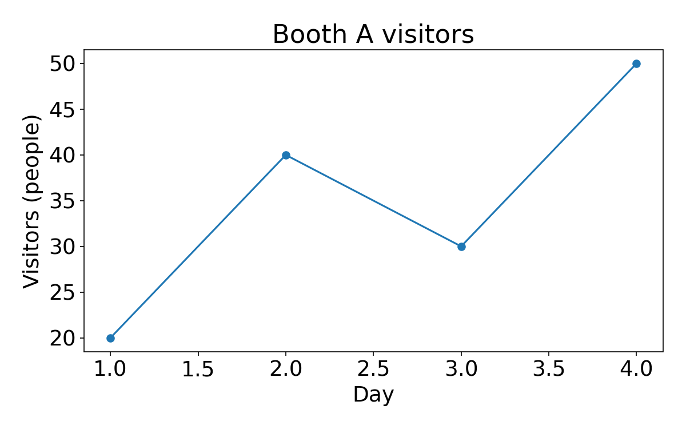
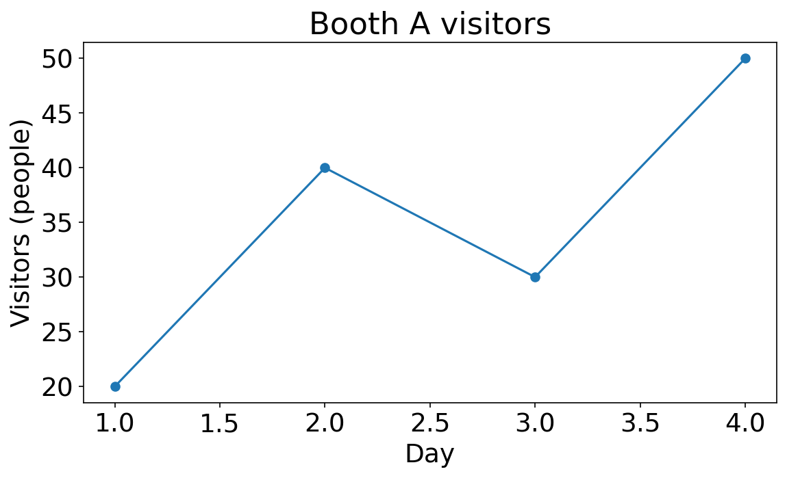
같은 dpi도 저장 경계가 달라지면 같은 픽셀 크기를 보장하지 않는다.
plt.show(): 열린 그림을 화면에 표시한다(GUI 환경). 파일 저장은 savefig()가 담당한다.Summary
관측의 짝을 보존하고, 질문에 맞는 표현을 선택하고, 파일로 전달한다.
| 판정 | 근거 |
|---|---|
| 시간 변화에는 순서 있는 선 | 2→3일차: A 40→30명 |
| 두 변수 관계에는 관측점 | (22°C, 40명)은 둘째 날 |
| 모양에는 명시적인 의미 | 색·마커는 부스, 점 크기는 대기시간 |
| 그림은 저장 후 확인 | 8×5인치·150dpi → 1200×750픽셀 |
좋은 그림은 값을 보존하고 읽는 기준을 밝힌다. 그림에서 보이지 않는 인과관계까지 주장하지 않는다.